レモの墓/Lemo
トラジャの墓巡りお次はレモという村に向かう。
この村の墓も観光化されていて付近には土産物屋が並んでいる。
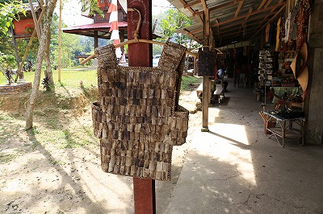
その店先に吊るしてあった竹のベスト。
昔の戦闘服なのだろうか？？？
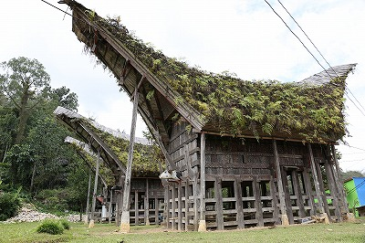
トンコナンの屋根には大量のシダが生えていた。
実際に使っている様子はなかったので、もしかしたら観光用に作ったものなのかも知れない。
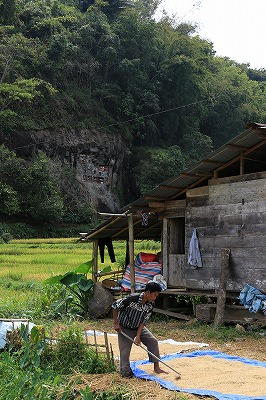
周囲は水田が広がり、農家のおじさんが米をシートの上に広げていた。
その背後の崖に墓はある。
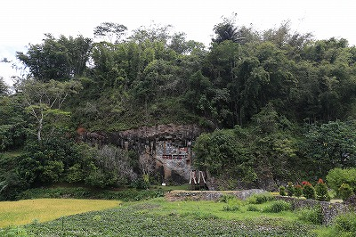
判りますか？
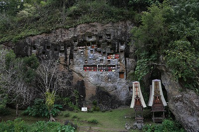
ほら。ね。
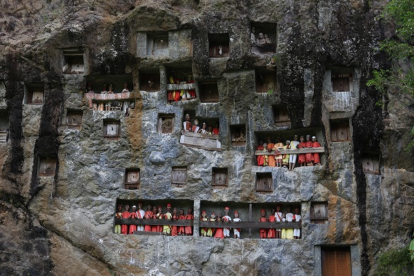
どすか？
これがレモの岩窟墓である。
おそらくトラジャで一番有名な墓で、観光ポスターなどにもここの画像がよく使われている。
そもそも観光ポスターがこのビジュアルってどうなの？という疑問がないわけではないが、墓はトラジャの貴重な観光資源なのだ。
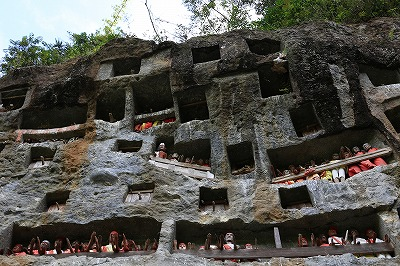
岩壁に無数のタウタウ人形が並んでいて、えもいえぬ迫力がある。
岩壁に四角い穴を穿って墓を作るのだが、それにしても凄いところに墓を造ったもんだ。
穴は1メートル角くらいの大きさで奥行きは3メートルほどだという。
そこからさらに垂直に縦穴を掘る。
遺体は横穴に安置され、次の子孫が埋葬される際には古い遺体を縦穴に落とすのだそうな。
それにしてもかなり硬そうな岩盤だ。
コレ石工がほぼ手作業で掘って行くのだが、大変だなあ。
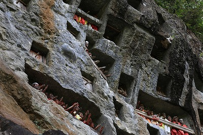
この墓のタウタウ人形は「前へ習え」みたいな感じで手を前に出している。
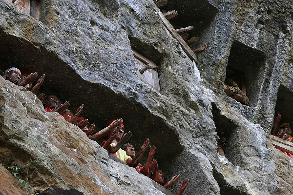
天に向かって手を差し伸べているのだろうか？
アタシにゃ「助けてくれー！」と言っているようにしか見えなかったんですけど…。
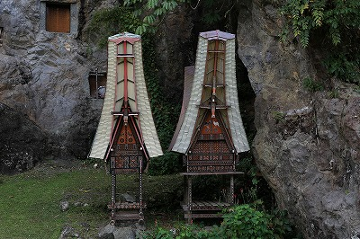
墓の下には棺桶を運ぶ際に使われたトンコナン風の龕が置かれていた。
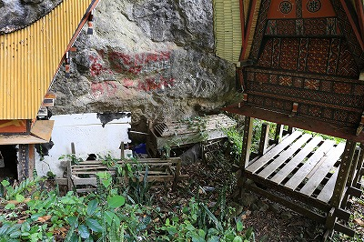
その後ろには古い龕が放置されていた。
この墓は身分の高い人だけが入れるのだと言う。
独りで墓の前でしんみりしていると何やらにぎやかな集団がやってきた。
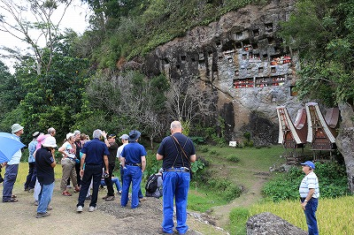
フランス人の団体さんだ。
ちなみにトラジャに来る外国人観光客はほとんどヨーロッパの人。
特にフランス資本のノボテルホテルがあるからか、圧倒的にフランス人が多かった。
世界中どこへ行っても見かけるでお馴染みの日中韓の観光客は不思議なことに全く見かけなかった。
トラジャ滞在中に出会った東アジアの旅行者は台湾から来たカップル2人だけだったなあ。
それにしてもやかましい。全員がぶっ壊れたラジオみたいに喋っている。
あまりの五月蝿さに耐え切れず、墓の近くの小道を散策することにした。
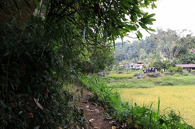
道は奥へ奥へと続いている。
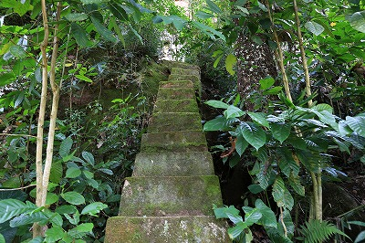
何があるのだろう、と思って歩いていたら…
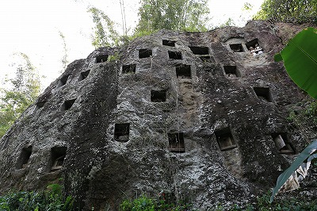
うお！
こっちにも岩窟墓があるじゃないの！
この巨大な岩塊は恐らく先ほどの墓と同じ山（というか岩）の裏側に当たる。
先ほどの岩窟墓は観光客が訪れるメジャーな墓であるのに対し、こちらは訪れる者もなくひっそりとしている。
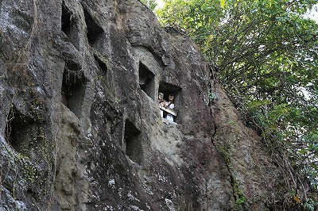
一番上の隅の墓にだけタウタウ人形が置かれていた。
比較的新しい墓なのだろう。
いわば新規分譲墓地といったところか。
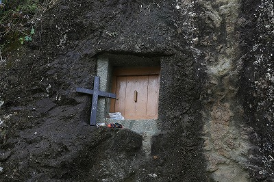
岩窟墓のいくつかはこのように扉がついている。
扉がついているのが遺体が納められている墓で、扉のついてない墓はまだ遺体が入っていない墓なのだ。
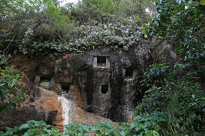
見落としていたが、よく見ればあちこちの岩壁に岩窟墓がしつらえられている。
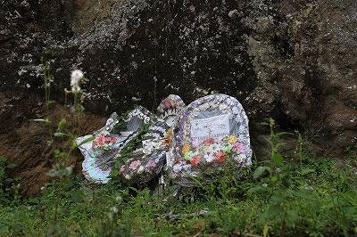
ここにも花環が置かれていた。最近埋葬されたのだろう。
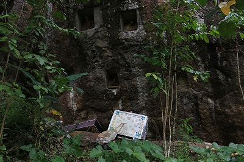
うるさいフランス人団体客のおかげでローカルな岩窟墓を見ることが出来たよ。メルシーボクーと言っておくよ。
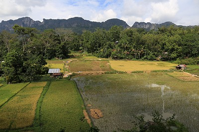
眼下には水田が広がる。
多毛作なのだろう水の張られた田、青々と茂る田、黄金色の田、刈り終わった田、と様々な色の田んぼが隣同士に並んでいた。
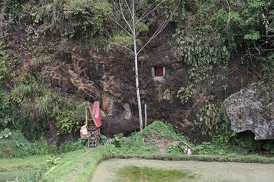
岩窟墓の近くには近年建てられた墓も。
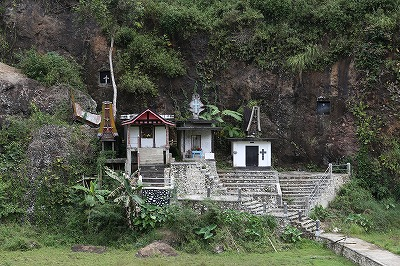
岩窟墓は場所も限られていて造るのが大変なので、実際にはこのような独立した小屋型のような墓が多い。
次へGO！
トラジャの葬式と墓に戻る
珍寺大道場 HOME